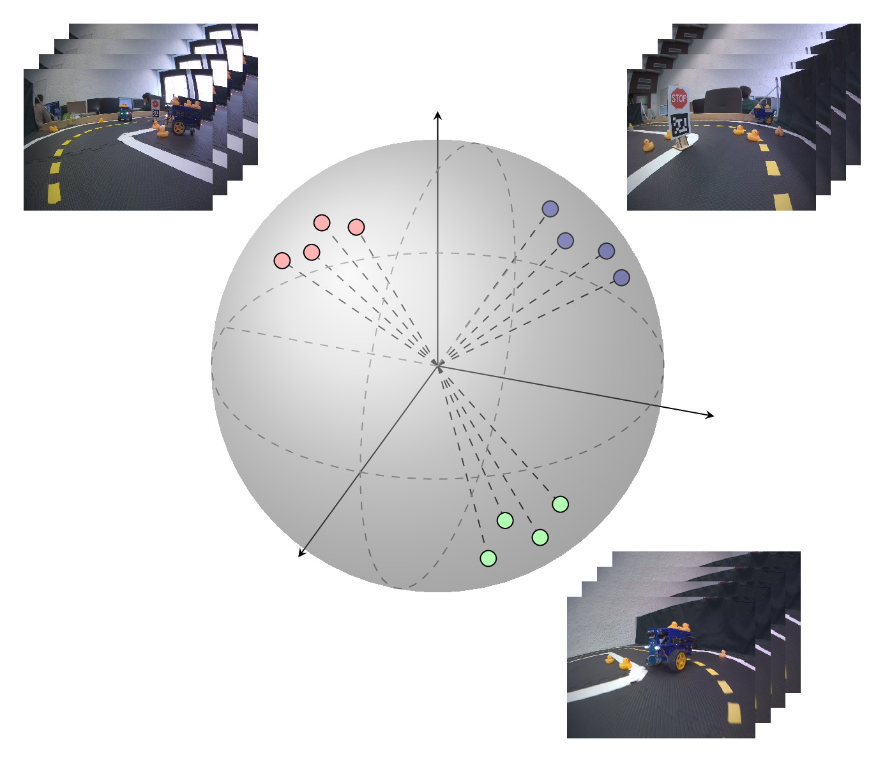
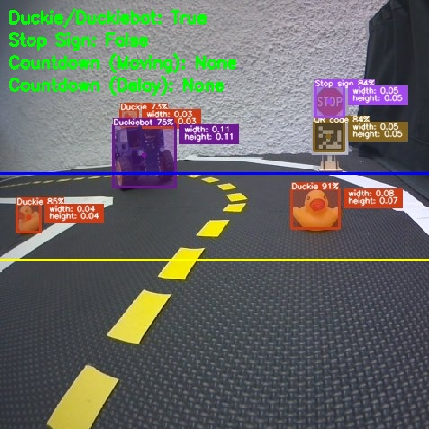

Real-Time Object Detection for Autonomous Driving: An Empirical Study in a Small-Scale Urban Environment
Krittin Chaowakarn,
Michael Meidinger (PhD advisor),
Andreas Herkersdorf (supervisor)
Bachelor's Thesis (TUM), 2025
A comprehensive study on object detection using Duckietown and YOLO, covering analysis of latency, throughput, and hardware utilization through YOLO versions 8–12 on NVIDIA Jetson Nano 4GB.